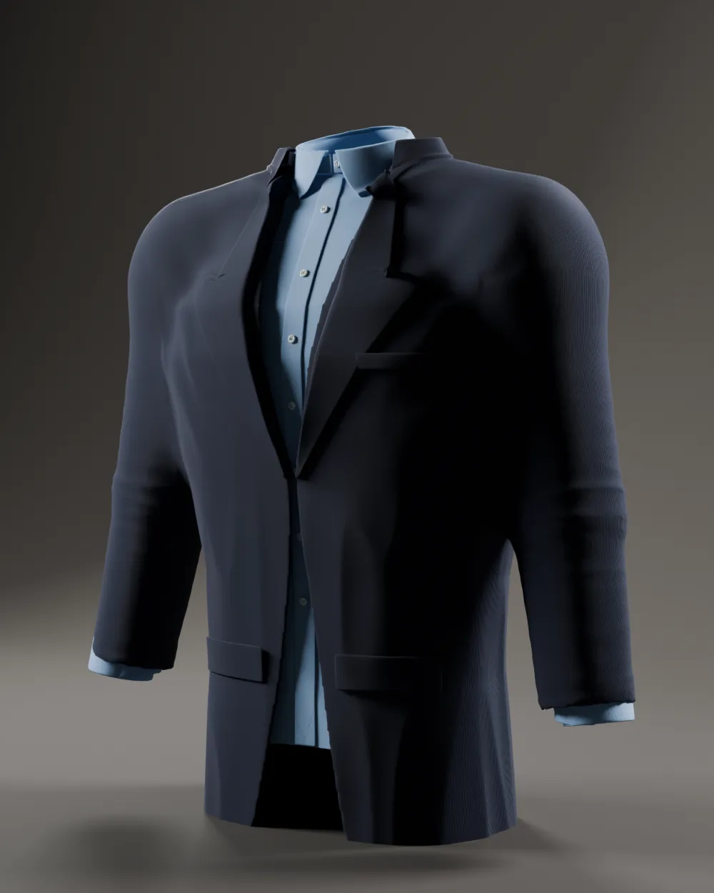
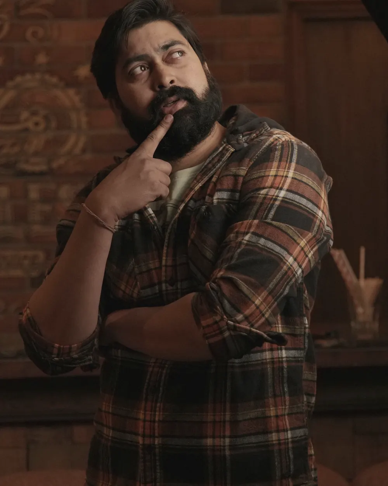
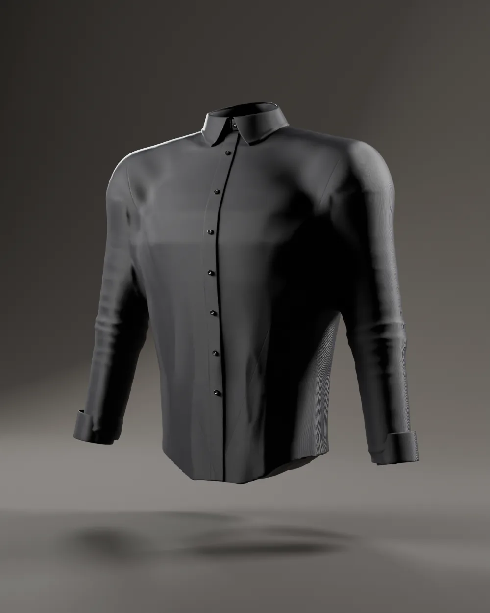
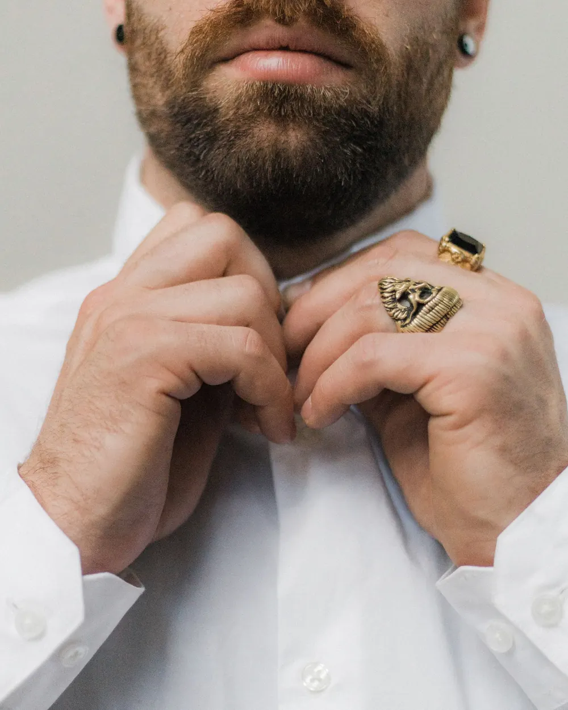

Gebaut für breite Schultern.
Hemden und Business-Casual für Bodybuilder und breit gebaute Männer. Weit im Kreuz, weit am Oberarm, schmal an der Taille. Damit das Hemd sitzt, ohne dass Sie zwischen Knopfleiste und Zelt wählen müssen.
- Schulterbreite
- bis 62cm
- Oberarm
- bis 51cm
- Drop Brust–Taille
- 16–28cm
- Größen × Passformen
- 5 × 3
01Der Schnitt
Konfektion wird für Kleiderbügel geschnitten. Wir schneiden für Kreuz.
Wer trainiert, kennt das Dilemma: Passt das Hemd an der Brust, hängt es an der Taille wie ein Segel. Passt es an der Taille, spannt die Knopfleiste. Der Fehler liegt nicht bei Ihnen, sondern im Schnittmuster.
Konfektion XLBREIT XL Power
-
+12 cm
Die Knopfleiste bleibt zu
Mehr Weite über der Brust, verteilt auf Vorderteil und Rücken. Dazu ein Knopfabstand von 8,5 cm, damit zwischen den Knöpfen nichts aufklafft.
-
+5 cm
Der Ärmel schnürt nicht ab
Eine höhere, weitere Armkugel und mehr Oberarmweite. Sie können den Arm heben, ohne dass das Hemd aus der Hose rutscht.
-
−8 cm
Die Taille wird kein Zelt
Abnäher im Rücken und ein Seitennahtverlauf, der der V-Form folgt. Der Drop zwischen Brust und Taille ist in drei Stufen wählbar.
02Die Kollektion
Neun Stücke. Kein Kompromiss am Bizeps.
Oxford, Popeline, Leinen, Flanell, Strick und ein Sakko ohne Polster. Jedes Stück in fünf Größen und drei Passformen.
03Passform
Drei Passformen. Ein Maß, auf das es ankommt.
Der Drop ist die Differenz zwischen Brust- und Taillenweite. Bei Konfektion liegt er bei etwa 8 cm. Bei uns beginnt er bei 16.
22cm Drop
Brust minus Taille
Für breite Kreuze und schwere Arme. 22 cm Drop, Oberarm und Schulter je eine Stufe weiter.
| Brustweite Hemd (XL) | 134 cm |
|---|---|
| Taillenweite Hemd (XL) | 112 cm |
| Oberarmweite Hemd (XL) | 52 cm |
| Vergleich Konfektion XL | Drop 8 cm |
04Lookbook · Casual Business
Eine Woche, vier Termine, null Spannung an der Knopfleiste.

Vorstand. Capo Sakko über Atlas Himmel, Knopf offen.
Capo ansehenMittag mit Kunden. Forum Streifen, Haifischkragen, keine Krawatte.
Forum ansehen
Feierabend. Ridge Overshirt statt Jacke.
Ridge ansehen
Abendessen. Nocturne, oberster Knopf offen.
Nocturne ansehen05Größenberater
Drei Maße. Zwanzig Sekunden.
Maßband um die breiteste Stelle der Brust, um die Taille auf Nabelhöhe und um den angespannten Oberarm. Wir rechnen den Rest.
06Atelier
Vier Dinge, die wir anders nähen.

Atlas Oxford · Button-down-Kragen, Perlmuttknöpfe
-
01
Die Armkugel
Sie sitzt höher und ist weiter als bei Konfektion. Der Ärmel hängt dadurch nicht am Deltamuskel, sondern läuft darüber. Heben Sie den Arm, kommt das Hemd mit, ohne aus der Hose zu rutschen.
Kugelhöhe +2,5 cmOberarm bis 51 cm
-
02
Der Knopfabstand
8,5 statt 10 cm. Auf einer breiten Brust entscheidet dieser Zentimeter, ob die Knopfleiste schließt oder kleine Fenster aufmacht.
8 Knöpfe statt 7Perlmutt, 11 mm
-
03
Der Rücken
Eine Kellerfalte in der Passe gibt Weite, wenn sich der Latissimus streckt, und schließt sich, wenn Sie stehen. Dazu zwei Abnäher, die der V-Form folgen.
Kellerfalte 4 cm2 Abnäher
-
04
Der Kragen
Halsweite und Brustweite sind bei uns entkoppelt. Wer einen 43er Kragen und 130 cm Brust hat, bekommt beides, nicht den Kragen der nächsten Größe.
Halsweite 41–47Steg 3,5 cm
01 · Versand
Ab 150 € kostenlos
Sonst 7,90 €. Gedacht als Lieferung in 2–3 Werktagen.
02 · Rückgabe
30 Tage
Passt etwas nicht, tauschen Sie Größe oder Passform.
03 · Änderung
Ärmel kürzen inklusive
Auf Wunsch auf den Zentimeter, ohne Aufpreis.
04 · Hinweis
Alles Konzept
Diese Leistungen gibt es nicht. Sie zeigen, wie der Shop gedacht ist.